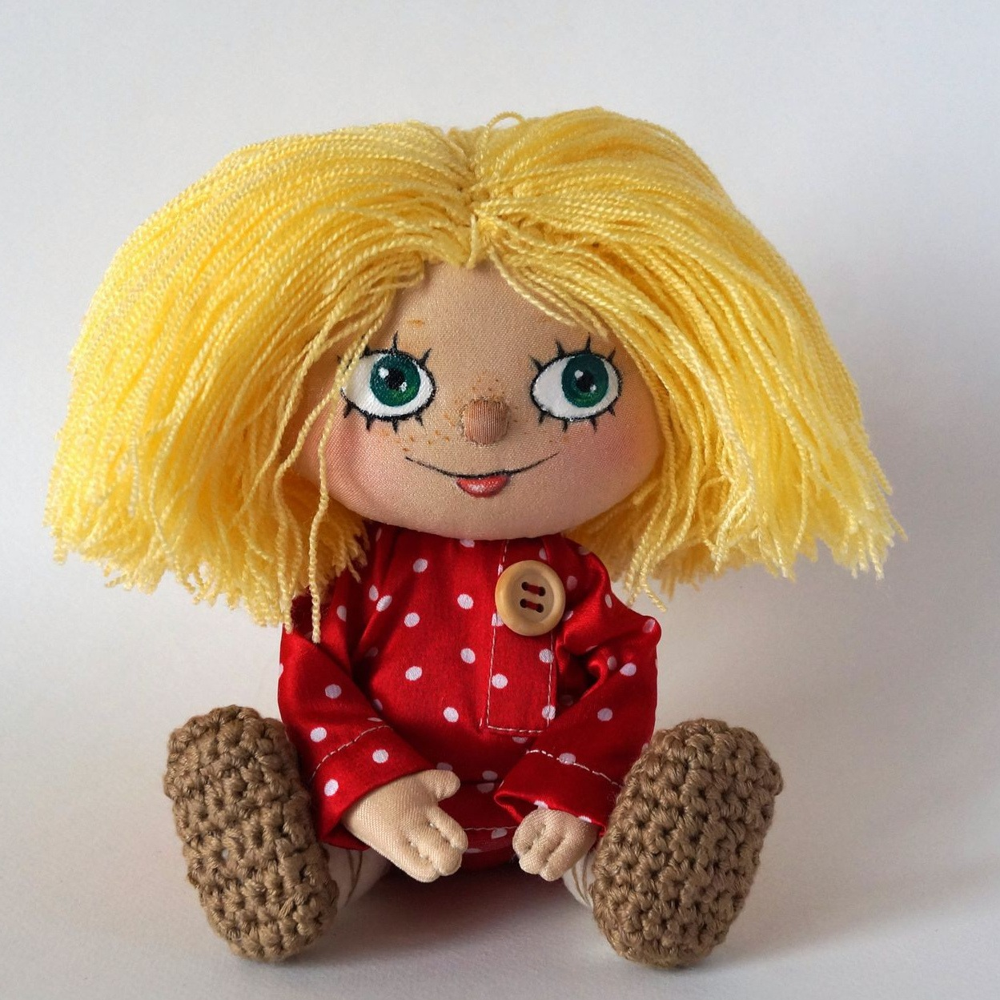

Домовенок Кузька и Бабёныш-Ягёныш. Продолжение 3.
Татьяна Александрова
Глава 4. Шпашайся, кто может!
— До чего же у вас тут животные бестолковые водятся! — возмущается Матвейка, — вот в Антарктиде…
Слушает Лидочка про животных Антарктиды и дивится: и мухи-то у них парами летают, и слоны шляпу при встрече снимают, и коровы крестиком вышивать умеют.
— Жалко, что Фенечка гусениц есть не научилась, — вздыхает она.
— Ерунда, — отмахивается Матвейка, — мы с этими вредителями сами расправимся, без всяких кошек. Только подумать надо. Я буду думать, а ты сиди тихо и мне не мешай.
Стал Матвейка думать. Сначала почесал пальцами в шевелюре, потом поковырял в носу, затем пожмурил глаза и стал смотреть вдаль с умным видом.
Сидит Лидочка тихо, даже дышать боится, чтобы братцу думать не помешать. А Кузька сидеть тихо не умеет. Не в привычке это домовых, сидеть тихо и ничего не делать. Интересно ему, что там еще этот городской Бабеныш Ягеныш придумает. Посидел домовенок на печке, погонял соломинкой таракана на стенке и стал в бирюльки играть. Губу нижнюю выпятит и бренчит по ней пальцем, как на балалайке. Красиво получается, душевно. Так заигрался, что его Матвейка услышал.
— Ты зачем мне думать мешаешь? — спросил строгим голосом он у Лидочки.
— Это не я, — оправдывается Лидочка.
— Как это не ты? Кроме нас в избе никого нету.
«Это домовенок», — хотела сказать девочка, да язычок прикусила. Не верит Матвейка в домовых, только сердиться будет. Погрозила домовенку пальчиком и опять ждать стала.
Кузька тоже притих. Неинтересно играть в бирюльки, когда тобой никто не восхищается. Сел тихонечко на полку, ножки свесил, сидит, муху из меда вылавливает. Выловил, кликнул шишигу Юльку, она муху облизала, чтобы та лететь могла, чтобы крылышки не слипались.
— Лети, муха, в дальние страны, за синие моря, за высокие горы, а к нам больше не залетай, самим меда маловато будет! — кричит Кузька вслед мухе.
— Кто опять тут жужжит? — встрепенулся Матвейка.
— Муха в мед попала, — говорит Лидочка почти правду.
— В ме-е-ед? — протянул мальчик. — В мед! Вот третий элемент для моего изобретения! Тащи сюда мед, зубной порошок и чернила. Будем для вредителей приманку делать.
Вскочила Лидочка с лавки, достала с полки мед, принесла баночку зубного порошка и пузырек чернил. Смотрит, как Матвейка все это в горшке намешивает.
— Здорово у тебя получается, братец, — нахваливает она, — и густо, и цвет приятный, и пахнет занимательно. Жалко только, что бабушка нас наругает, если мы вредителей приманивать будем. Лучше бы нам, наоборот, их с нашего огорода отвадить.
— Да ты че? — аж подпрыгнул Матвейка. — Не понимаешь, что ли? Мы их приманивать не на капусту будем, а на сорняки! Почему они капусту едят? Потому что она сладкая да красивая. А если мы сорняки моим веществом намажем, то все гусеницы перебегут на крапиву и лопухи.
— Думаешь, перебегут?
— Как миленькие. За рецептом моей смеси к вам еще все соседи ходить будут. Мы с тобой еще на весь мир прославимся. К нам на кораблях из-за моря купцы приедут. Может, даже из самой Антарктиды. У них там с сорняками — сущая беда. Ну просто лезут из земли, как ненормальные. Замучились с ними бедные антарктидцы.
— Ой, как здорово! — захлопала в ладоши девочка. — Значит, мы не только гусениц с капусты выгоним, но и от сорняков избавимся? Вот спасибо нам бабушка Настасья скажет!
Взяли дети горшок со смесью, прихватили по кисточке и в огород побежали. Кузька подумал немного, достал с полки самую маленькую кисть и тоже за ними помчался. Хоть и вредный это Матвейка, а здорово придумал: и вредителей выгнать, и от сорняков избавиться.
Ох и трудная это работа, сорняки чудесной смесью мазать! Смесь хоть и чудесная, хоть и пахнет занимательно, но вязкая, липкая и непослушная, как двухнедельные котята.
Стараются ребята. Ни один репейник не пропустят, ни одну лебеду. Очень хочется им бабушке Настасье сюрприз сделать. А больше других домовенок старается: в хороших делах он впереди всех должен быть. Труднее всех Кузьке: надо, чтобы Матвейка не заметил, как он кисточку в горшок макает, надо больше всех сделать успеть.
Жаль, что не хватило смеси на весь огород. Только крапиву вдоль забора вымазали да лебеду в картошке раскрасили.
Стоит лебеда несчастная, листочки у нее слиплись, повисли, да и цвет, если честно, не такой уж и красивый получился.
Смешайте мед с чернилами и зубным порошком — сами увидите. Только чернила обязательно должны быть синие и в пузыречке стеклянном, а мед — липовый и незасахаренный.
Посмотрели на свою работу ребята и на речку мыться побежали — сами они не чище той самой лебеды были: слипшиеся и синие. Кто знает, вдруг вредители не на сорняки, а на них самих переползут?
А Кузька с ними на речку не пошел. Домовята в речках не купаются, потому что их русалки за пятки хватают. Щекотно же.
Кузька решил утра дождаться и в росе искупаться. Пришел домой — чучело-чучелом, весь синий от чернил, на липкий мед дрянь всякая налипла, волосы торчат, как у старого лешего.
— Шпашайся, кто может! — вопит шишига Юлька. — Шмерть наша пришла.
— Я не смерть, я домовенок, — обижается Кузька, — это я от старания такой чумазый.
— Ты не чумазый, ты ужашно штрашный! — уже тише вопит шишига. — Может, это все-таки не ты?
— Вот техи-растехи! — горячится Кузька. — Совсем шишиги от рук отбились. Своего родного домовенка не узнают.
— Ура! Это не шмерть наша! Это домовенок наш! — опять громко голосит шишига Юлька. Бросилась она на шею к домовенку, радуется.
— Ой, а ты вкушненький, — говорит, — весь в чернилах, в зубном порошке. А я штрасть до чего чернила люблю. Можно я тебя немножечко пооблизываю? Ну пожа-а-алуйшта!
— Вот еще глупости, — не соглашается Кузька, — иди лучше горшок из-под смеси и кисточки оближи. И то пользы больше будет.
Обрадовалась шишига Юлька, побежала чернила с горшка слизывать, а Кузька отправился ночевать к коровке. Негоже порядочному домовенку грязь в дом нести.
Домовые вообще спать не любят. Скучно им спать, за это время столько дел переделать можно! Но дела ночью делать нельзя — дела шум очень любят, а хозяева шум по ночам терпеть не могут: он Дрему прогоняет и Баюнка пугает. Зато в коровнике шуметь сколько угодно можно — коровка знай себе жвачку жует, на шум никакого внимания не обращает. За ночь Кузька и бока ей вычистил, и подстилку поменял, и паутину по углам на кулак намотал. Даже запыхался немножко. Зато как только первый лучик солнца у него в носу пощекотал, на огород побежал. За ночь гусеницы вполне могли на сорняки переехать! И с детьми, и с чемоданами, и с кое-какой мебелишкой.
Что ожидало домовенка на грядках! Вредители нарезают себе салат из капусты на завтрак, а на лебеде, крапиве, лопухах дедушкины пчелки с пасеки прилипли. Лапки у них в меду увязли, глазки чернилами залило, зубной порошок нос залепил. Ничего не понимают бедные пчелки: летели на запах меда, а прилетели на верную погибель.
— Ох, беда-беда, огорчение! — всплеснул руками Кузька, — Хотели, как лучше, а получается все хуже и хуже.
— Пчелок жалко, — всхлипнула шишига Юлька. Она тоже рано утром на огород прибежала, — хорошие у наш пчелки были. Не будет у наш больше пчелок.
— Почему это не будет? — не понял Кузька.
— Пчелки такие всегда чиштенькие, такие нарядные, они лучше шо штыда умрут, чем в таком ужашном виде на пчелы покажутся.
— Ой, мамочки! — подпрыгнул на месте Кузька — Пчелки, милые, не стесняйтесь, пожалуйста, я смотреть на вас не буду. Ты, шишига, за водой беги да других шишиг приводи, что не самые вредные. Будем пчелок от стыда спасать.
До вечера трудились Кузька и шишиги. Каждое крылышко пчелам отмыли, каждую лапку. Пчелки высохли и передумали со стыда умирать. Только чихали еще долго от зубного порошка. Когда он в нос попадает, то от чихания никакого спасу нет.
А Кузька написал объявление — он совсем недавно азбуку освоил — и повесил на забор.
Пчелы, правда, читать не умели, но Кузька-то об этом не знал. Как все дети, только что научившиеся читать, он думал, что если он буквы знает, то и все знать должны. Но пчелы с других пасек и так на липкие сорняки не полетели. Потому что их дедушкины пчелы предупредили.
А сорняки к вечеру завяли. Наверное, тоже от стыда. Очень неприятно быть липким и синим, когда кругом все чистые и зеленые.
Продолжение следует